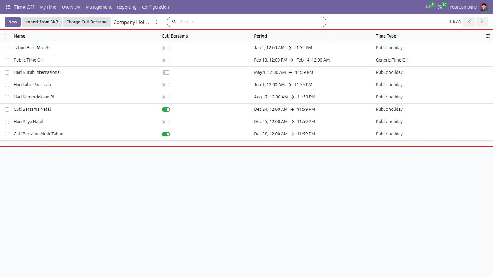
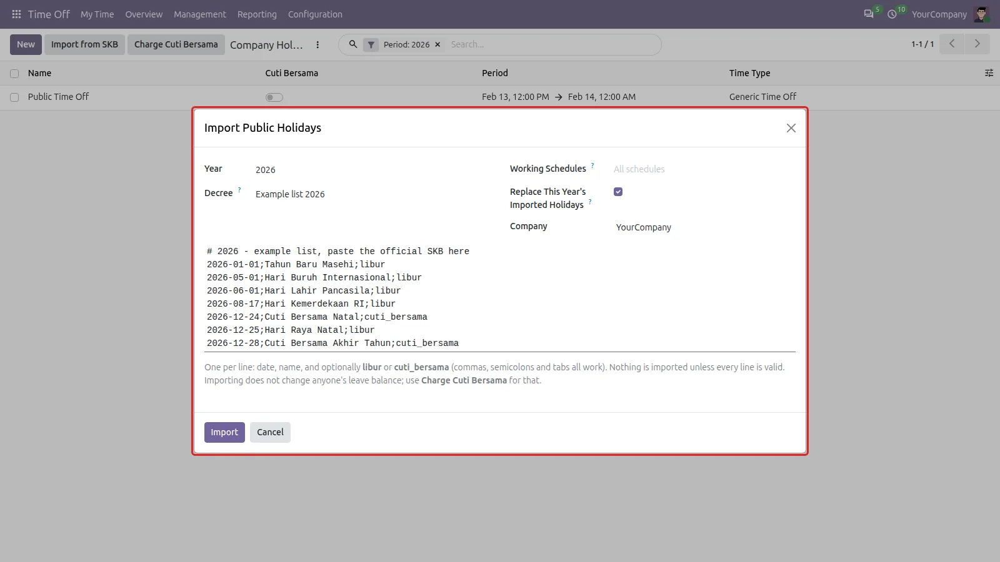
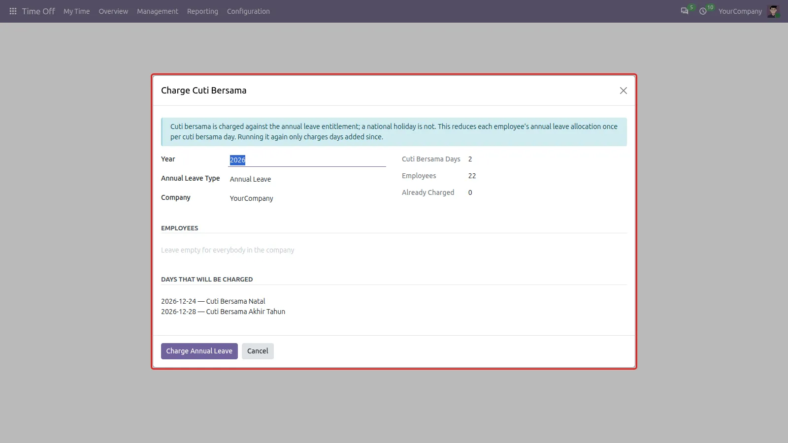
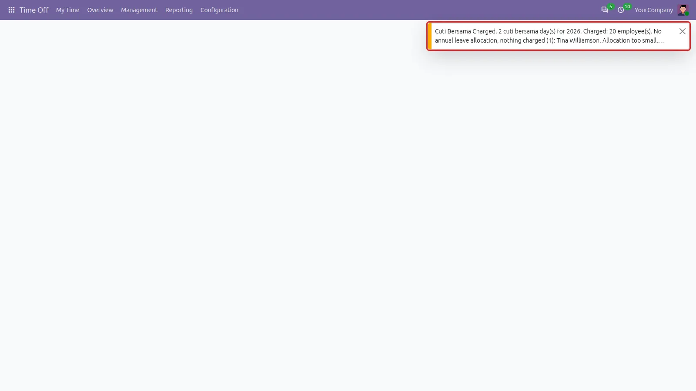
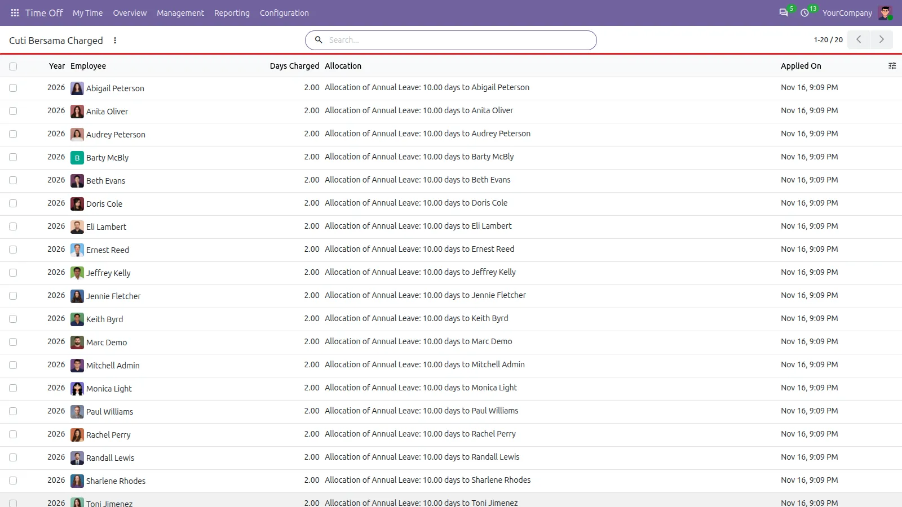
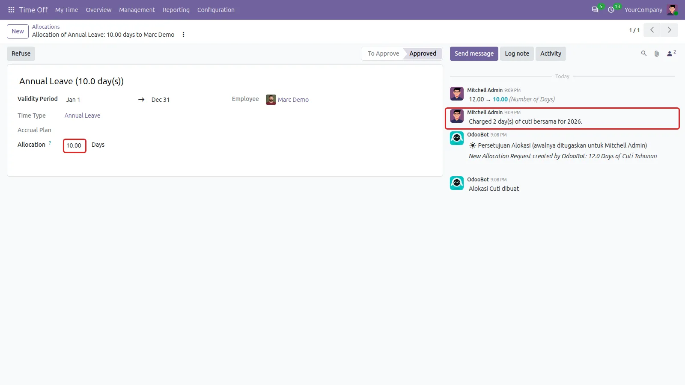
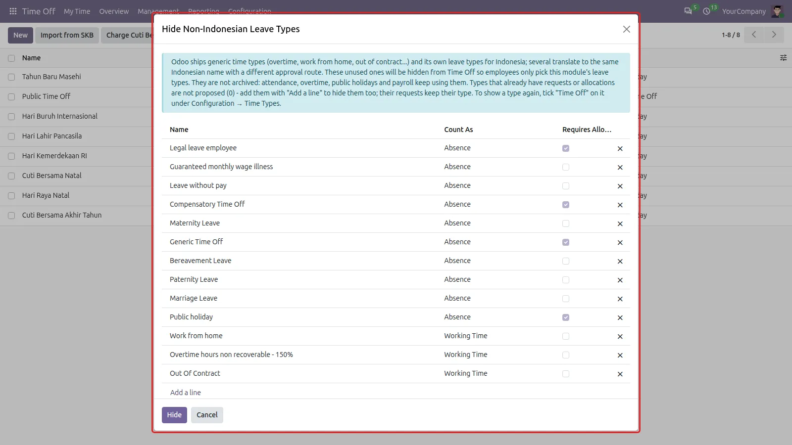
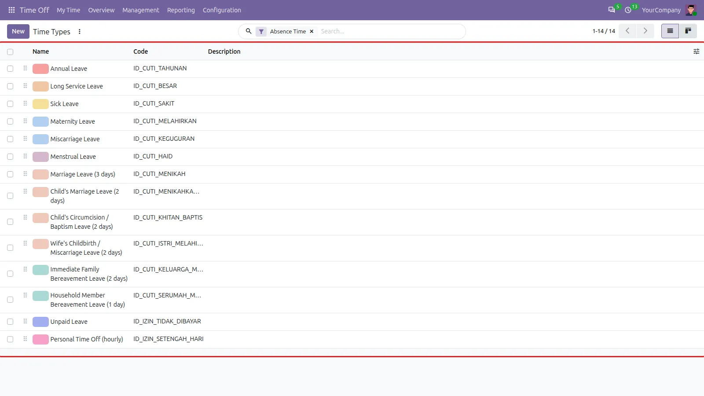
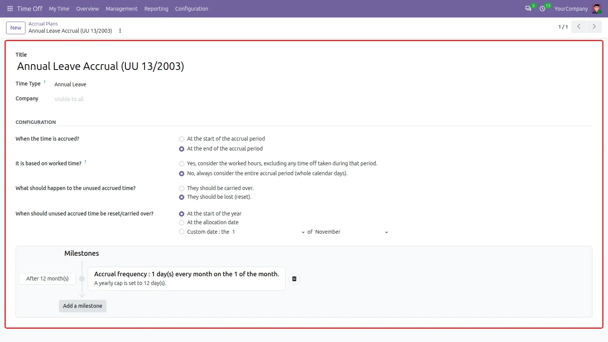
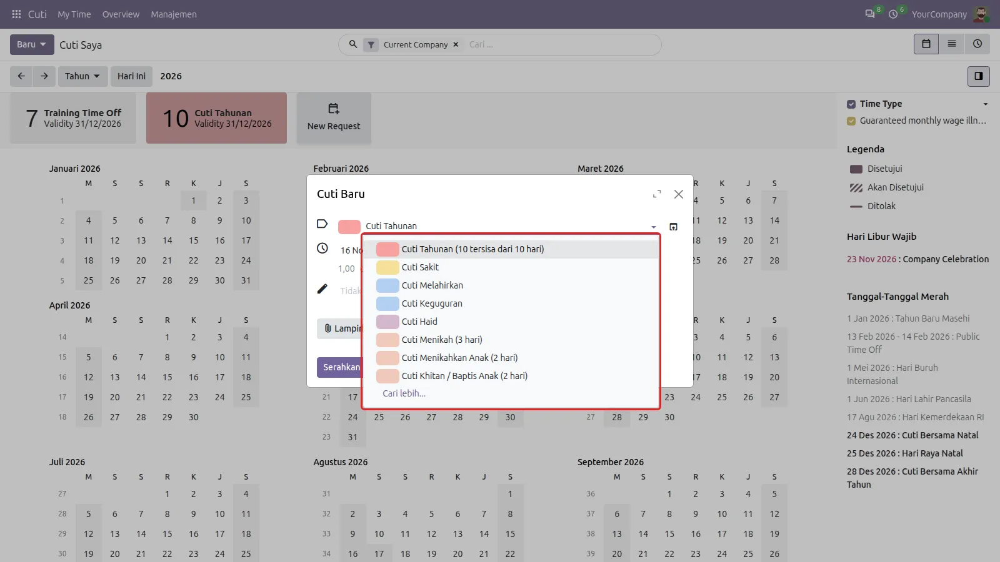

Indonesia Leave - Cuti, Leave Accrual, Public Holiday
Indonesian leave (UU 13/2003, Cipta Kerja): statutory leave types, 12-day annual leave accrual, SKB public holidays and cuti bersama charged to annual leave.
- Price
- $39
- Odoo versions
- 18.0
- 19.0
- 20.0
- Technical name
tamadoo_leave_id- License
- OPL-1

Text and screenshots below are from the Odoo 20.0 version of this module.
Statutory leave types, the 12-day annual leave accrual, this year's SKB holidays in one paste, and cuti bersama charged to annual leave — without double counting.

What you get
14 statutory leave types
Annual, sick, maternity, menstrual, important-reason and unpaid leave with approval routes and documents.
12-day accrual
1 day a month after 12 months of service, capped at 12 a year — an Odoo accrual plan you can adjust.
SKB in one paste
Paste the decree; every line is checked before anything is written. Re-import a revised SKB safely.
Cuti bersama charged
Reduce annual allocations once per cuti bersama day. Run it again: only new days are charged.
Leave types included
| Leave | Rule | Approval |
|---|---|---|
| Annual Leave | 12 days/year after 12 months, accrual plan | Manager |
| Long Service Leave | Allocation | Manager + HR |
| Sick Leave | Doctor's note · Pasal 93 pay scale flag | HR |
| Maternity / Miscarriage Leave | Supporting document | HR |
| Menstrual Leave | Manager | |
| Marriage (3) · Child's Marriage (2) · Circumcision / Baptism (2) | Pasal 93 (4) | Manager |
| Wife's Childbirth (2) · Bereavement (2 / 1) | Pasal 93 (4) | Manager |
| Unpaid Leave · Personal Time Off (hourly) | Manager + HR / Manager |
Step by step
1. Import the year's SKB
Company Holidays → Import from SKB. One line per day: date;name;libur or cuti_bersama.

2. Charge cuti bersama to annual leave
Preview the days and employees, then charge.




3. Only Indonesian leave types
Configuration → Indonesia → Hide Non-Indonesian Leave Types takes Odoo's own types (Paid Time Off, Overtime, Work from home...) out of the Time Off picker. Hidden, not archived, so attendance and payroll keep working; reversible. The leave types belong to Indonesia: set the company's country to Indonesia.


4. Annual leave accrual
12 days a year after 12 months of service. Unused days carry over on 1 January and the carried-over days lapse 6 months later — the default follows common practice (lapses 6 months after carry-over); adjust it to your company regulation on the plan.

5. Employees request leave in Indonesian

Good to know
- No holiday dates are shipped: the SKB changes every year — paste the official list.
- Employees without an allocation, or with too few days left, are reported instead of guessed.
- Carry-over of annual leave is company policy: the 6-month validity is a default you can change or switch off on the accrual plan.
- The Pasal 93 flag on Sick Leave tells payroll which leave follows the 100/75/50/25% scale.
Requirements: Odoo 20.0 with Time Off.
Get Indonesia Leave
Questions before buying? Write to tama.odoo@gmail.com.